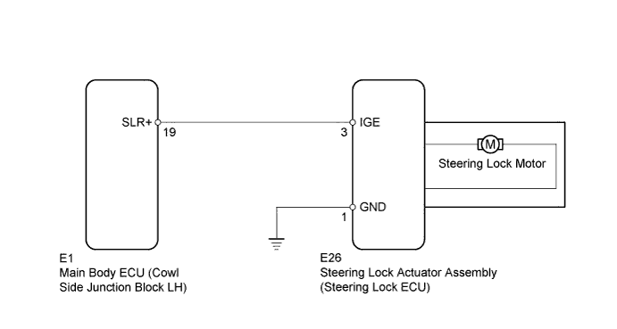
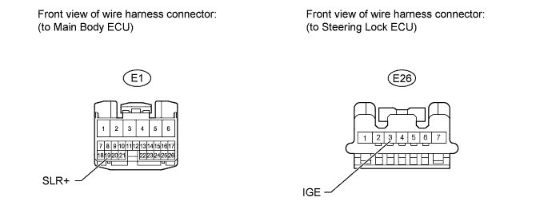
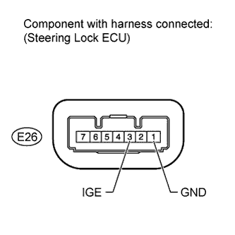

STEERING LOCK SYSTEM > Steering Lock Motor Drive Power Circuit |

| 1.CHECK VEHICLE CONDITION |
Check the problem symptom of the steering lock system.
| Result | Proceed to |
| Steering lock cannot be released | A |
| Steering lock cannot lock | B |
|
| ||||
| A | |
| 2.READ VALUE USING INTELLIGENT TESTER (LOCK/UNLOCK RECEIVE) |
Use the Data List to check if the steering lock command is functioning properly.
| Tester Display | Measurement Item/Range | Normal Condition | Diagnostic Note |
| Lock/Unlock Receive | Steering lock command reception record/YES or NO | YES: Steering lock/unlock signal received NO: Steering lock/unlock signal not received | - |
|
| ||||
| OK | |
| 3.INSPECT STEERING LOCK ECU |
 |
Immediately after turning the engine switch on (IG), measure the voltage between terminals E26-3 (IGE) and E26-1 (GND) of the steering lock ECU.
| Result | Proceed to |
| 11 to 14 V (measured voltage never becomes below 1 V) | A |
| Below 1 V | B |
|
| ||||
| A | |
| 4.CHECK HARNESS AND CONNECTOR (STEERING LOCK ECU - MAIN BODY ECU) |

Disconnect the E26 steering lock ECU connector.
Disconnect the E1 main body ECU connector.
Measure the resistance according to the value(s) in the table below.
| Tester Connection | Condition | Specified Condition |
| E26-3 (IGE) - E1-19 (SLR+) | Always | Below 1 Ω |
| E26-3 (IGE) or E1-19 (SLR+) - Body ground | Always | 10 kΩ or higher |
|
| ||||
| OK | ||
| ||
| 5.INSPECT STEERING LOCK ECU |
 |
Move the shift lever to P (for A/T).
Turn the engine switch off.
Open the driver side door.
Measure the voltage according to the value(s) in the table below.
| Tester Connection | Condition | Specified Condition |
| E26-3 (IGE) - E26-1 (GND) | Steering lock motor operating | Below 1 V |
| E26-3 (IGE) - E26-1 (GND) | Steering lock motor not operating | 11 to 14 V |
|
| ||||
| OK | ||
| ||
| 6.CHECK HARNESS AND CONNECTOR (STEERING LOCK ECU - MAIN BODY ECU) |
Disconnect the E26 steering lock ECU connector.
Disconnect the E1 main body ECU connector.
Measure the resistance according to the value(s) in the table below.
| Tester Connection | Condition | Specified Condition |
| E26-3 (IGE) - E1-19 (SLR+) | Always | Below 1 Ω |
| E26-3 (IGE) or E1-19 (SLR+) - Body ground | Always | 10 kΩ or higher |
|
| ||||
| OK | ||
| ||